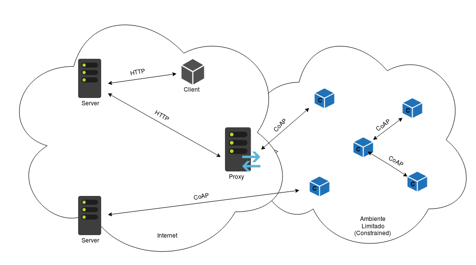

A Internet, criada no auge da Guerra Fria, em 1969, é a maior rede de dados do mundo. Por
consistir em diversas redes de variados portes interconectadas, é um sistema complexo e
que depende de padronização para que possa existir comunicação entre os seus usuários.
Visto isso, foram criados os protocolos de rede. Um protocolo pode ser definido como uma
descrição formal de um conjunto de convenções que regem a maneira e o fluxo de
comunicação entre os dispositivos em uma rede. Eles funcionam como um “idioma universal”
entre computadores, inclusive de fabricantes e/ou sistemas operacionais diferentes.
A Internet foi desenvolvida fundamentada no modelo de referência TCP/IP, que é
estruturado em 4 camadas: física, rede, transporte e aplicação. Em cada camada, existem
protocolos específicos para o tipo de operação. No entanto, existem inúmeros protocolos
de rede com empregabilidades distintas, os quais devem ser utilizados em conformidade
com as características da rede em uso e com as demandas da tarefa a ser executada.
Segundo o IETF (Internet Engineering Task Force), a Internet das Coisas pode ser
conceituada como uma rede de objetos físicos incorporados a sensores, circuitos
eletrônicos e softwares com conectividade para viabilizar a troca de dados para
monitoração, controle ou mesmo com outros dispositivos conectados.
Os sistemas IoT (Internet of Things), comumente, possuem limitações
de recursos de comunicação e computação. Como alternativa a tal, a conexão desses
sistemas à Internet proporciona autonomia ao conjunto, de modo a obter um fluxo
de informações mais linear, ou seja, sem que haja
intermediação de usuários humanos. Entretanto, para que isso ocorra, é necessário o uso
de protocolos específicos e adaptados para redes com poucos recursos.
Embora o HTTP (Hypertext Transfer Protocol) seja amplamente usado, ele não possui as
características ideais para os sistemas IoT, dado que seus pacotes podem ocupar milhares
de bytes. A IoT é composta de redes restritas, como a 6LoWPAN (IPv6 over Low-Power
Wireless Personal Area Networks) e nós restritos, executados em microcontroladores de 8
bits com pequenas quantidades de memória ROM (Read Only Memory)
e RAM (Random Access Memory).
O CoAP, “Constrained Application Protocol”, ou, em uma tradução aproximada, “Protocolo
de Aplicação Restrita”, foi desenvolvido pelo grupo de trabalho CoRE (Constrained
Restful Environments) do IETF. Ele é bom em ambientes com recursos limitados:
dispositivos com energia limitada, enlaces com baixa largura de banda, redes
congestionadas ou com perdas. Em redes congestionadas, CoAP/UDP pode funcionar, porém o
MQTT/TCP, alternativa ao CoAP, pode não ser nem capaz de administrar um handshake completo.
CoAP pode ser usado onde broadcast e multicast são necessários.
CoAP é adequado na construção de algo no qual um dispositivo é implantado em modo
"report only". Uma vez implantado, o dispositivo apenas reporta dados de volta para o
servidor. O CoAP é adequado para redes de comunicações domésticas, posto que ferramentas
informativas, equipamentos de controle e de comunicação em redes de Casas Inteligentes
precisam ser leves e ter baixo custo.
Quando implantado em redes third-party (coletora de dados de terceiros) onde não temos
controle sob firewalls e portas bloqueadas, CoAP pode não ser adequado. Nesse caso,
HTTP/REST é uma boa opção. Como nós sensores são servidores CoAP, isso pode ser problema
com NAT (Network Address Table). LWM2M (Lightweight Machine to Machine),
que é baseado em CoAP, supera isso ao requerer que clientes enviem primeiro um pacote de prova de
forma que o roteador possa fazer a associação. Apesar de CoAP não requerer IPv6, é mais
fácil de ser implantado em redes IP.
Como IoT usa a Internet, CoAP foi inspirado no HTTP. Similarmente ao HTTP, CoAP é um
protocolo de transferência de documento baseado no método request-response
(requisição-resposta), um cliente pede um recurso para a URI (Uniform Resource Identifier)
e o servidor responde. Além disso, princípios de RESTful (capacidade de determinado sistema
aplicar os princípios de REST - Representational State Transfer) são seguidos
e GET, POST, PUT, DELETE são utilizados.
CoAP difere de HTTP porque usa UDP (User Datagram Protocol) para o transporte no lugar
de TCP (Transmission Control Protocol), visto que o handshaking
de UDP é mais leve e fácil de ser implementado em microcontroladores. Sua comunicação é feita usando
datagramas sem conexão. O cabeçalho do CoAP é de apenas 4 bytes, além de também poder
usar características do broadcast e multicast do UDP.
Devido ao uso de datagramas e SMS, outros protocolos baseados em pacotes também podem ser empregados.
CoAP usa um subset de tipos do MIME (Multi-Purpose Internet Mail Extensions)
e códigos de resposta do HTTP.
CoAP usa o Datagram Transport Layer Security (DTLS) para segurança. O protocolo DTLS de
segurança de CoAP é denominado CoAPs. DTLS é baseado em PSK (Pre-Shared Key), RPK
(Raw Public Key) e certificado de segurança. Esses são os três principais elementos quando
consideramos segurança, integridade, autenticação e confidencialidade.
Como não é utilizado o protocolo TCP, o CoAP cuida dos ACKs das mensagens, tentativas de
controle de congestionamento e detecção dupla.

Figura 1: Arquitetura do Protocolo da Camada de Aplicação CoAP.